ATACseq 基本原理如下图所示。真核生物 DNA 与核小体结合形成染色质，结合的紧密程度是动态变化的。当 DNA 需要复制或转录时，结合变得松散让 DNA 暴露。暴露的 DNA 能被 Tn5 转座酶切割，与核小体紧密结合的 DNA 无法被切割。Tn5 转座酶切割 DNA 时插入测序接头，经过 PCR 扩增等步骤就完成了测序建库。
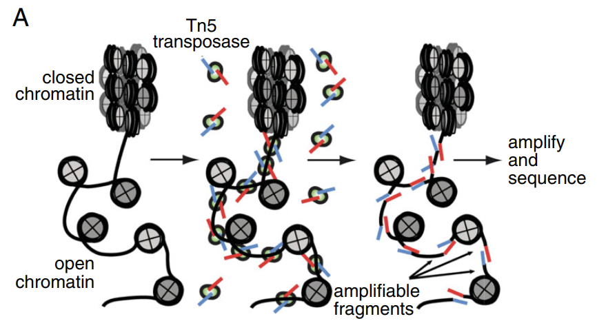
ATACseq 建库
如下图所示，因为间隔的核小体数目不同，ATACseq 测序插入片段（fragments）分布会呈现多个峰的分布。在约 <100,200,400,600bp 处有峰，分别对应着 NER (nucleosome-free regions) 和 单、双、三核小体区域的 reads. 因此我认为常用的 2150 的双端测序不适合 ATACseq. 因为最需要的 NER 区域 reads 是很短的，用 2 150 等于浪费许多的测序通量。
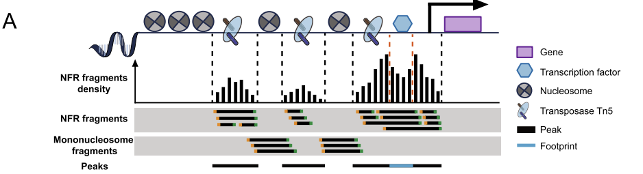
核小体数目不同产生片段长度不同
ATACseq 一般人种要求 50M 以上比对的 fragments (reads), 因为线粒体 DNA 没有核小体结合，测序出现大量线粒体数据是正常的，线粒体数据占比在 20-80% 都有可能。
ATACseq 分析流程如下图所示。质控、比对、peak calling 是必须的上游分析，Motif 等下游分析是个性化的。
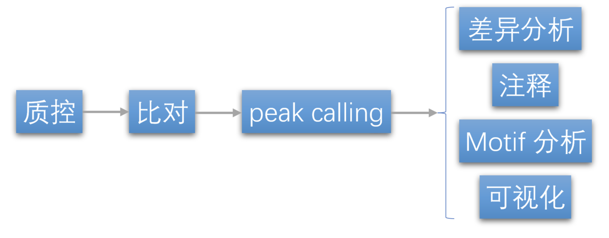
流程示意图
1. 参考基因组建立索引 首先要安装bowtie2，可以参考：短读长序列比对软件bowtie2的安装和使用 ，我们使用conda安装
1 2 3 4 5 6 ATAC_DATA=/rd1/user/pengq/6ma/atac/Clean REF_INDEX=~/atac-seq/data/Caenorhabditis_elegans.WBcel235.dna.fa.bybowtie2 REF=/home/pengq/data/ce11/fna/Caenorhabditis_elegans.WBcel235.dna.fa mkdir -p ~/atac-seq/databowtie2-build -f /home/pengq/data/ce11/fna/Caenorhabditis_elegans.WBcel235.dna.fa $REF_INDEX
2. 数据质控 质控需要用到fastqc，安装方法可以参考：****FastQC的安装与使用 ****
使用MultiQC进行质控数据的整合，安装和使用方法可以参考：****MultiQC的安装和使用 ****
我们使用conda安装fastqc和MultiQC
1 2 3 4 5 mkdir -p ~/atac-seq/data/fastqc_reportfastqc $ATAC_DATA /*/*fq.gz -o ~/atac-seq/data/fastqc_report multiqc ~/atac-seq/data/fastqc_report
生成了两个文件，1个html报告和1个multiqc_data的文件夹，前者直接网页打开就可以查看，后者包含一些数据基本的统计信息和日志文档；
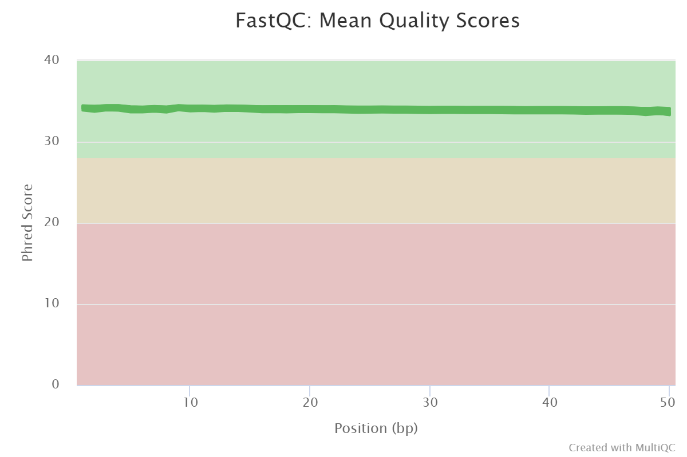
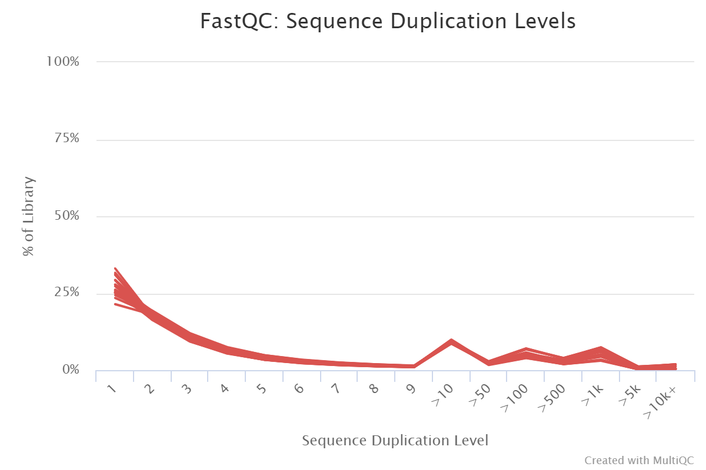
3. 比对 1 2 3 4 5 mkdir -p ~/atac-seq/alignfor i in $(ls $ATAC_DATA )do bowtie2 -x $REF_INDEX -X 1000 -1 $ATAC_DATA /${i} /${i} _1.fq.gz -2 $ATAC_DATA /${i} /${i} _2.fq.gz | samtools view -F 4 -bS - > ~/atac-seq/align/${i} .bam & done
bowtie2 参数：
bowtie2 [options] -x {-1 -2 | -U } [-S ] maximum fragment length (500)
samtools view 参数：
-F 4表示：只要flag中（是一个累加值）含有4，就不要这一个reads比对记录；4表示：read unmapped (0x4)
-f 2表示：只要flag中（是一个累加值）含有2，就保留这个比对记录；2表示：read mapped in proper pair (0x2)
-b output BAM
-S ignored (input format is auto-detected)
-q INT : only include reads with mapping quality >= INT [0]
-o FILE : output file name [stdout]
-@, –threads INT : Number of additional threads to use [0]
-h include header in SAM output
4. 比对之后的质控
过滤低质量的比对，Bowtie2 设置比对质量大于 30，
需要用 picard 对 PCR 重复进行标记，使用conda安装picard
参考：picard中文使用指南
线粒体 DNA 与核基因组不同，他没有缠绕组蛋白形成核小体，因此都是开放的。一般来说会导致测序结果里有不少线粒体信号，需要移除。 同时移除基因组 Blacklist 区域。如果使用 Genrich 进行 Peak calling 那么这些步骤不需要进行，他有相应参数实现。
1 2 3 4 5 6 7 8 9 10 11 12 13 cd ~/atac-seq/alignfor i in $(ls $ATAC_DATA )do samtools view -f 2 -q 30 -o ${i} .f2.q30.bam ${i} .bam samtools sort -@ 4 -o ${i} .f2.q30.sort.bam ${i} .f2.q30.bam picard MarkDuplicates VERBOSITY=ERROR QUIET=true \ CREATE_INDEX=false REMOVE_DUPLICATES=true \ INPUT=${i} .f2.q30.sort.bam \ OUTPUT=${i} .f2.q30.sort.rmdup.bam \ M=${i} .marked_dup.log samtools view -h ${i} .f2.q30.sort.rmdup.bam | grep "Mt" -v | grep "Pt" -v | samtools view -bS -o ${i} .final.bam done
5. 插入片段长度分布
什么叫insert size？ 参考《一篇文章说清楚什么是“插入片段”》——公众号“碱基矿工”
如何从sam文件中求得insert size：在“read mapped in proper pair”的前提下，取第九列
1 2 3 4 5 cd ~/atac-seq/alignfor i in $(ls $ATAC_DATA )do samtools view -f 64 ${i} .final.bam | awk 'BEGIN{OFS=FS="\t"}{print sqrt($9*$9)}' | sort -n > ${i} .insert_size.txt & done
这里-f 64的64就是0x40，表示提取一半的比对记录，因为两条reads对应一个insert size。
在RStudio上运行
1 2 3 df = read.table( "G:/6mA/atac-seq/data/fastqc_report/align/T1.insert_size.txt" , header = F ) df_ggplot = ggplot( data= df, aes( x= V1) ) df_ggplot + geom_histogram( binwidth = 5 , fill = "SteelBlue3" , color = "SteelBlue2" ) + scale_y_continuous( name = "Read count" , expand = c ( 0 , 0 ) ) + scale_x_continuous( name = "Insert size" ) + theme( panel.background = element_blank( ) , axis.line = element_line( ) )
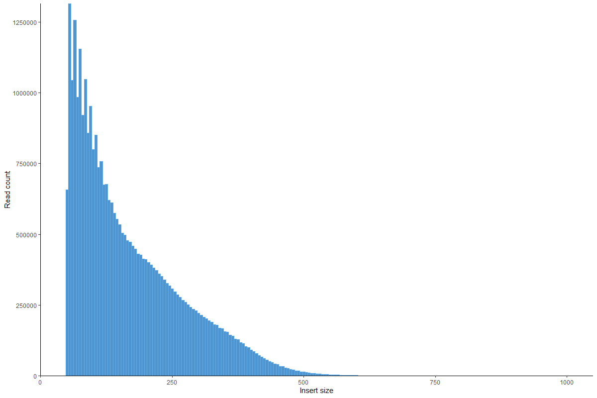
6. Peak Calling Chip-seq与ATAC-seq call peaks的区别，前者peaks是代表抗体结合转录因子的位点，后者peaks是代表Tn5转座酶切开染色质开放区的两端，因此在一个位置，前者peaks有一个，后者有两个
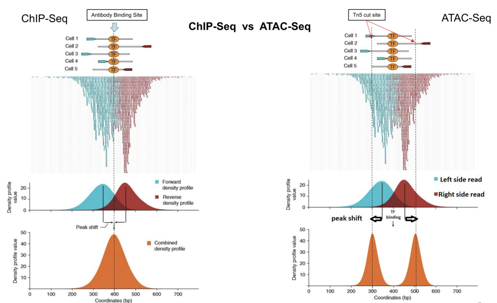
6.1 bamtobed 1 2 3 4 for i in $(ls $ATAC_DATA )do bedtools bamtobed -i ${i} .final.bam > ${i} .final.bed & done
这里需要留意一下bam和bed两种文件的起始坐标，分别是以1、0开始的
6.2 call peaks 需要用到macs2，我们还是使用conda进行安装；
参数的解读参考：MACS2文档学习 ，MACS2 Call peaks parameters
—SPMR：如果为True, MACS将为碎片堆积配置文件保存每百万次读取的信号。它不会在峰值呼叫期间干扰计算pvalue/qvalue，因为内部MACS2一直使用原始堆积和较小数据集之间的缩放因子来计算统计测量。如果你计划使用bedGraph中的信号输出来使用bdgcmp和bdgpeakcall调用峰值，你不应该使用这个选项，因为你会得到不同的结果。但是，在跨多个数据集显示规范化的堆积轨迹时，建议使用此选项。要求设置-B。默认值:false
1 2 3 4 5 6 7 mkdir -p ~/atac-seq/peak/cd ~/atac-seq/peak/for i in $(ls $ATAC_DATA )do macs2 callpeak -t ~/atac-seq/align/${i} .final.bed -n ${i} --shift -75 --extsize 150 --nomodel -B --SPMR -g ce --keep-dup all & done
以上是ATAC-seq数据分析的必要上游分析，之后的分析都是不必要的个性化的下游分析。
7. bedGraphToBigWig 之前ChIP-seq里面讲过deeptools来转格式bam2bw，现在学的是bdg2bw，是一回事吗？这一步使用到的工具：bedSort bedClip bedGraphToBigWig。
下载：http://hgdownload.cse.ucsc.edu/admin/exe/linux.x86_64/bedSort http://hgdownload.cse.ucsc.edu/admin/exe/linux.x86_64/bedClip http://hgdownload.cse.ucsc.edu/admin/exe/linux.x86_64/bedGraphToBigWig
下载之后，赋予权限，再转移到一个PATH包含的目录下，mv bedSort bedClip bedGraphToBigWig ~/biosoft
1 2 3 4 5 6 7 8 9 10 11 12 13 14 15 cd ~/atac-seq/peak/samtools view -H ../align/T1.final.bam | perl -ne 'if(/SN:(\S+)\s+LN:(\d+)/){print "$1\t$2\n"}' > chr.size CHR_SIZE=~/NGS_data/ce11.chrom.sizes for i in $(ls $ATAC_DATA )do bedSort ${i} _treat_pileup.bdg ${i} _treat_pileup.sort.bdg bedClip -truncate ${i} _treat_pileup.sort.bdg chr.size stdout | perl -ane 'print if($F[1] < $F[2])' > ${i} _treat_pileup.bedgraph bedGraphToBigWig ${i} _treat_pileup.bedgraph chr.size ${i} _treat_pileup.bw & done
8. 可视化 8.1 TSS Enrichment TSS富集结果依赖于基因注释结果。这个图在学习ChIP-seq的时候也画过，方法一样
1 2 3 4 5 6 cd ~/ATAC_seq/visualfor i in SRR58746{57..62}do ~/miniconda3/bin/computeMatrix reference-point -S ~/ATAC_seq/peak/${i} _treat_pileup.bw -R ~/Ref/Arabidopsis/Arabidopsis_thaliana.TAIR10.44.gtf -a 3000 -b 3000 -p 1 -o ${i} .matrix.TSS.3k.gz ~/miniconda3/bin/plotHeatmap -m ${i} .matrix.TSS.3k.gz -o ${i} .TSS.3k.png --colorMap Reds done
8.2 IGV中查看数据 导入bigwig文件和narrowPeak文件到IGV中（可以显示peaks的名称），即可查看ATAC-Seq数据的结果。这一步之前也做过
deeptools 提供了 bam, bigwig 处理、QC、画图等许多工具。本教程介绍 plotHeatmap 画 ATACseq 信号热图。
第一步 bamCoverage 命令将 Bam 文件转换成 bigwig 文件。
1 2 bamCoverage --numberOfProcessors 8 --effectiveGenomeSize 2747877777 --normalizeUsing RPGC \ --outFileFormat bigwig -b ${bam_dir} /${sample} _MD.bam -o ${bw_dir} /${sample} .bw
参数 --effectiveGenomeSize 的设置值在 Effective Genome Size — deepTools 3.4.3 documentation 查看。
RPGC 计算方法：
figure8
Scale factor 计算方法：(total number of mapped reads * fragment length) / effective genome size
第二步 computeMatrix 命令生成画图矩阵。但是先用 R 语言提取包含 peak 的启动子区域。注意输出的 BED 要包含 strand 列，computeMatrix 命令会正确处理 strand 信息。
1 2 3 4 5 6 7 8 9 10 library(rtracklayer) library(TxDb.Hsapiens.UCSC.hg38.knownGene) txdb <- TxDb.Hsapiens.UCSC.hg38.knownGene promoter <- promoters(genes(txdb), upstream = 3000, downstream = 3000) peak <- import(peak_path, format = "narrowPeak" ) overlap_index <- findOverlaps(promoter, peak) keep_promoter <- unique(promoter[queryHits(overlap_index)]) export.bed(keep_promoter, bed_path)
从 bigwig 文件生成用于热图的矩阵，多个 bigwig 文件用空格分隔。
1 2 3 computeMatrix scale-regions --regionsFileName ${bw_dir} /${group} _promoter.bed --regionBodyLength 6000 \ --outFileName ${bw_dir} /${group} _matrix.gz --binSize 60 --numberOfProcessors 4 \ --scoreFileName ${bw_dir} /${group} _1.bw ${bw_dir} /${group} _2.bw ${bw_dir} /${group} _3.bw
最后 plotHeatmap 命令画图。
1 2 plotHeatmap --matrixFile ${bw_dir} /${group} _matrix.gz --outFileName ${bw_dir} /${group} _heatmap.pdf \ --zMin 0 --zMax 8 --xAxisLabel Promoter --startLabel 3Kb --endLabel 3Kb
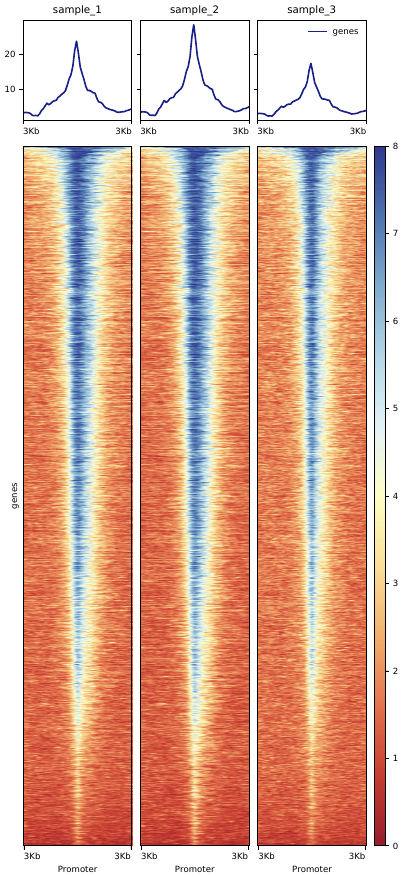
8.4 EnrichedHeatmap EnrichedHeatmap 基于 ComplexHeatmap 的信号富集热图 R 包。其原理是将 peakset 信号转换为矩阵并热图可视化。
1 2 3 4 5 library( rtracklayer) library( TxDb.Hsapiens.UCSC.hg38.knownGene) library( ChIPseeker) library( EnrichedHeatmap) library( circlize)
取得基因组启动子区域，注意用 genes(txdb) 而不是 txdb 限制为基因的启动子，否则条目将非常多。
1 2 3 4 5 6 7 8 9 10 11 txdb <- TxDb.Hsapiens.UCSC.hg38.knownGene promoter <- promoters( genes( txdb) , upstream = 3000 , downstream = 3000 ) promoter[ 1 : 3 ] GRanges object with 3 ranges and 1 metadata column: seqnames ranges strand | gene_id < Rle> < IRanges> < Rle> | < character> 1 chr19 58359752 - 58365751 - | 1 10 chr8 18388282 - 18394281 + | 10 100 chr20 44649234 - 44655233 - | 100 - - - - - - - seqinfo: 595 sequences ( 1 circular) from hg38 genome
用 ChIPseeker 包的 readPeakFile 函数读取 narrowPeak 文件。或者如果是 rtracklayer 包的 import 函数，它支持读取更多的格式，比如 bigwig,bed 等。
1 peak <- readPeakFile( peakPath)
将启动子区 peakset 数据转换为画图矩阵。注意将没信号的启动子区数据移除。
1 2 3 mat <- normalizeToMatrix( peak, promoter, extend = 0 , value_column = "V5" , k = 100 , mean_mode = "w0" ) mat <- mat[ rowSums( mat) > 0 , ]
读取后 narrowPeak 数据 “V5” 列为峰信号强度值，所以 value_column 参数设置 “V5”.参数 k 决定 bins/windows 数目（矩阵的列数）。参数 mean_mode 决定计算平均信号强度方法，可选以下方法：
1 2 3 4 5 6 7 8 9 10 11 12 13 Following illustrates different settings for mean_mode ( note there is one signal region overlapping with other signals) : 40 50 20 values in signal regions + + + + + + + + + + + + + + signal regions 30 values in signal region + + + + + + signal region == == == == == == == == = a window ( 17 bp) , there are 4 bp not overlapping to any signal regions. 4 6 3 3 overlap absolute: ( 40 + 30 + 50 + 20 ) / 4 weighted: ( 40 * 4 + 30 * 6 + 50 * 3 + 20 * 3 ) / ( 4 + 6 + 3 + 3 ) w0: ( 40 * 4 + 30 * 6 + 50 * 3 + 20 * 3 ) / ( 4 + 6 + 3 + 3 + 4 ) coverage: ( 40 * 4 + 30 * 6 + 50 * 3 + 20 * 3 ) / 17
最后 EnrichedHeatmap 函数画图。
1 2 3 hm_color <- colorRamp2( breaks = c ( 0 , 1000 ) , colors = c ( "#fff5f0" , "#cb1c1d" ) ) top_anno <- HeatmapAnnotation( enriched = anno_enriched( gp= gpar( col= "black" , lwd = 1.2 ) ) ) enrich_hm <- EnrichedHeatmap( mat = mat, col = hm_color, axis_name = c ( - 3000 , 3000 ) , top_annotation = top_anno, show_heatmap_legend = FALSE , use_raster = FALSE )
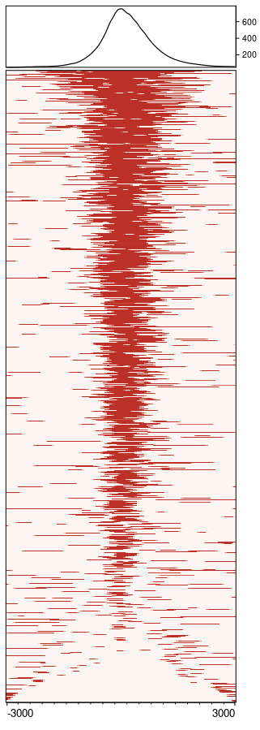
9. 多样品数据可重复评估 1 2 3 4 5 6 7 8 9 10 11 12 13 14 15 wc -l SRR587465{7..9}_peaks.narrowPeak30123 SRR5874657_peaks.narrowPeak 30644 SRR5874658_peaks.narrowPeak 30806 SRR5874659_peaks.narrowPeak bedtools intersect -a SRR5874657_peaks.narrowPeak -b SRR5874658_peaks.narrowPeak -wa > tmp bedtools intersect -a tmp -b SRR5874659_peaks.narrowPeak -wa | wc -l && rm -f tmp 29310 wc -l SRR587466{0..2}_peaks.narrowPeak23965 SRR5874660_peaks.narrowPeak 26038 SRR5874661_peaks.narrowPeak 24812 SRR5874662_peaks.narrowPeak bedtools intersect -a SRR5874660_peaks.narrowPeak -b SRR5874661_peaks.narrowPeak -wa > tmp bedtools intersect -a tmp -b SRR5874662_peaks.narrowPeak -wa | wc -l && rm -f tmp 22773
由以上可知，重复性不错。
9.2 IDR评估 同时考虑peaks间的overlap和富集倍数的一致性。使用和结果解读参考：https://www.jianshu.com/p/d8a7056b4294
1 2 3 4 5 6 7 8 9 10 ~/miniconda3/bin/conda install idr for i in SRR58746{57..62}do sort -k8,8nr ~/ATAC_seq/peak/${i} _peaks.narrowPeak > ~/ATAC_seq/idr/${i} _peaks_sort.narrowPeakdone ~/miniconda3/bin/idr --samples SRR5874657_peaks_sort.narrowPeak SRR5874658_peaks_sort.narrowPeak -o SRR5874657_SRR5874658_idr --plot --input-file-type narrowP eak --rank p.value &
会生成两个文件：SRR5874657_SRR5874658_idr.pngSRR5874657_SRR5874658_idr
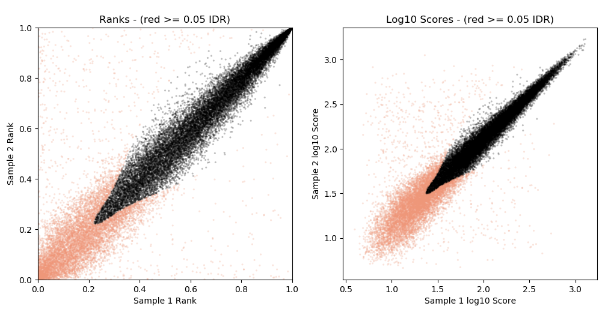
没有通过特定IDR阈值的peaks显示为红色
1 2 3 4 5 wc -l SRR5874657_SRR5874658_idr28433 awk '{if($5 >= 540) print $0}' SRR5874657_SRR5874658_idr | wc -l 19317 19317/28433=67.9%
10. 注释 这一步前面ChIP-seq也做了，感觉差不多
1 2 3 4 5 6 7 8 9 10 11 12 13 14 15 16 library(ChIPseeker) library(GenomicFeatures) ath <- makeTxDbFromGFF("E:/Computational_Biologist/生信积累/测序类/表观遗传/ChIP-seq/拟南芥ChIP-seq_BMC基因组/ref/Arabidopsis_thaliana.TAIR10.44.gff3" ) peaksfile <- "SRR5874658_peaks.narrowPeak" peak <- readPeakFile(peaksfile,header=F) outname="SRR5874658" peakAnno <- annotatePeak(peak,TxDb = ath,assignGenomicAnnotation = TRUE) pdf(file = paste0(outname,"peakAnnotation.pdf" )) plotAnnoPie(peakAnno,main=paste0(outname,"\nDistribution of Peaks" ),line=-8) dev.off() write.table(as.data.frame(peakAnno@anno),file = paste0(outname,"peakAnnotation.txt" ),sep = "\t" ,row.names = FALSE)
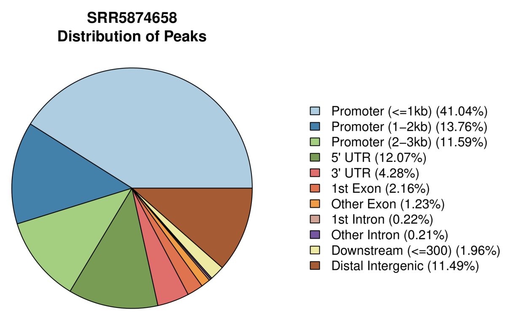
以上是一些ATAC-seq分析的部分过程，一些差异分析、motif 分析可以见这篇文章：ATAC-Seq 分析流程 ，希望对大家有帮助。
参考：
ATAC-seq 分析（上） ATAC-Seq 分析流程 短读长序列比对软件bowtie2的安装和使用 FastQC的安装与使用 MultiQC的安装和使用 picard中文使用指南 MACS2文档学习 MACS2 Call peaks parameters
{kind=link}